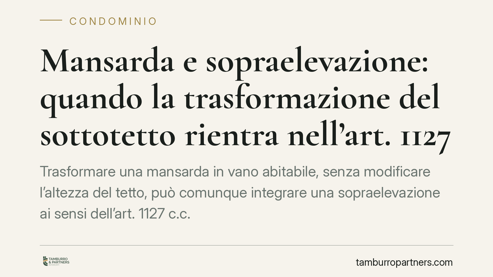

Mansarda e sopraelevazione: quando la trasformazione del sottotetto rientra nell'art. 1127 c.c.
Trasformare una mansarda in vano abitabile, senza modificare l'altezza del tetto, può comunque integrare una sopraelevazione ai sensi dell'art. 1127 c.c. Secondo la giurisprudenza di legittimità, rileva non l'aumento geometrico visibile, ma l'occupazione della colonna d'aria sovrastante l'edificio. Una distinzione che incide su limiti statici, autorizzazioni condominiali e indennità dovute agli altri condomini.

Il caso e il principio
Una recente ordinanza della Seconda Sezione civile della Cassazione è tornata su un tema ricorrente nei contenziosi tra condomini: quando l'intervento sul sottotetto dell'ultimo piano diventa giuridicamente una sopraelevazione.
Il punto non è banale. Si tende a credere che, finché il tetto non viene alzato, non vi sia alcuna sopraelevazione. La Corte ha chiarito invece che il criterio decisivo non è l'aumento visibile dell'altezza, ma l'occupazione della cosiddetta colonna d'aria sovrastante l'edificio, cioè lo spazio aereo che costituisce pertinenza comune.
Se la trasformazione della mansarda comporta la creazione di nuovi volumi utili in quello spazio, l'intervento ricade nella disciplina dell'art. 1127 cod. civ., con tutte le conseguenze che ne derivano.
> Nota redazionale: il riferimento esatto all'ordinanza (numero e anno) va verificato sulle banche dati ufficiali prima di qualsiasi utilizzo processuale. Il principio di diritto qui esposto è quello consolidato in materia.
Inquadramento normativo
L'art. 1127 cod. civ. riconosce al proprietario dell'ultimo piano (o del lastrico solare) il diritto di sopraelevare, salvo che il titolo disponga diversamente. Tale diritto incontra però tre limiti precisi:
- il divieto di sopraelevazione quando le condizioni statiche dell'edificio non lo consentono;
- il divieto se la sopraelevazione pregiudica l'aspetto architettonico dell'edificio;
- il divieto se diminuisce notevolmente l'aria o la luce ai piani sottostanti.
Sul primo limite si innesta il profilo antisismico. La valutazione delle "condizioni statiche" non può prescindere oggi dalle norme tecniche sulle costruzioni e dalla classificazione sismica dell'area: un nuovo carico sulla struttura va verificato alla luce della normativa tecnica vigente. Si tratta di una lettura evolutiva del requisito statico, da ancorare alla perizia di un tecnico abilitato caso per caso.
Attenzione a non confondere due piani distinti. La normativa regionale sul recupero dei sottotetti (le varie leggi regionali che consentono di rendere abitabili volumi esistenti) disciplina il profilo *urbanistico-edilizio*: stabilisce quando l'intervento è assentibile dal punto di vista pubblicistico, con i relativi requisiti di altezza media interna e rapporti aeroilluminanti. Il piano *civilistico-condominiale* dell'art. 1127 c.c. è altra cosa: riguarda i rapporti tra condomini e la proprietà dello spazio aereo. Un recupero sottotetto legittimo sul piano urbanistico può comunque integrare una sopraelevazione sul piano condominiale.
Implicazioni pratiche
Per il proprietario dell'ultimo piano la conseguenza è concreta: anche un intervento "interno", che non tocca la sagoma del tetto, può richiedere il rispetto dei limiti dell'art. 1127 e il pagamento dell'indennità agli altri condomini.
L'indennità è prevista dall'ultimo comma dell'art. 1127 c.c. Il criterio di calcolo muove dal valore attuale dell'area occupata dalla sopraelevazione: questo valore si divide per il numero dei piani (compreso quello nuovo) e il risultato si ripartisce tra gli altri condomini secondo i millesimi di proprietà. In pratica, chi sopraeleva deve compensare gli altri per l'utilizzo di uno spazio che, in quota parte, era comune.
Per gli altri condomini si aprono precise tutele. Possono opporsi se dimostrano il pregiudizio statico, architettonico o quello alla luce e all'aria. Possono inoltre pretendere l'indennità e, nei casi più gravi, agire per la rimozione dell'opera eseguita in violazione dei limiti.
Cosa fare in concreto
- Verifica preliminare dei titoli. Controlla il regolamento condominiale e l'atto di provenienza: potrebbero escludere o limitare il diritto di sopraelevare.
- Commissiona una perizia statica e sismica. Affida a un tecnico la valutazione dei carichi aggiuntivi alla luce delle norme tecniche vigenti, prima di avviare i lavori.
- Distingui i due piani autorizzativi. Accerta i requisiti urbanistici del recupero sottotetto previsti dalla legge regionale e, separatamente, la posizione condominiale ex art. 1127 c.c.
- Quantifica l'indennità. Fai stimare il valore dell'area occupata e calcola la quota dovuta agli altri condomini secondo i millesimi, per evitare contenziosi successivi.
- Documenta tutto. Conserva progetti, relazioni tecniche e comunicazioni al condominio: sono la base difensiva in caso di opposizione.
In sintesi
Il messaggio della giurisprudenza è chiaro: conta la sostanza dell'intervento, non la sua apparenza. Un tetto che resta alla stessa quota non mette al riparo da nulla, se nuovi volumi occupano lo spazio aereo comune. Prima di trasformare una mansarda, è prudente misurare l'intervento con il metro dell'art. 1127 c.c., oltre che con quello urbanistico.
---
Contributo informativo a cura di Tamburro & Partners Avvocati. Non costituisce parere legale.
Ogni condominio ha una storia a sé.
Se gestisci un'amministrazione e vuoi un confronto su una specifica questione condominiale, scrivi allo studio. Ti rispondiamo entro un giorno lavorativo.